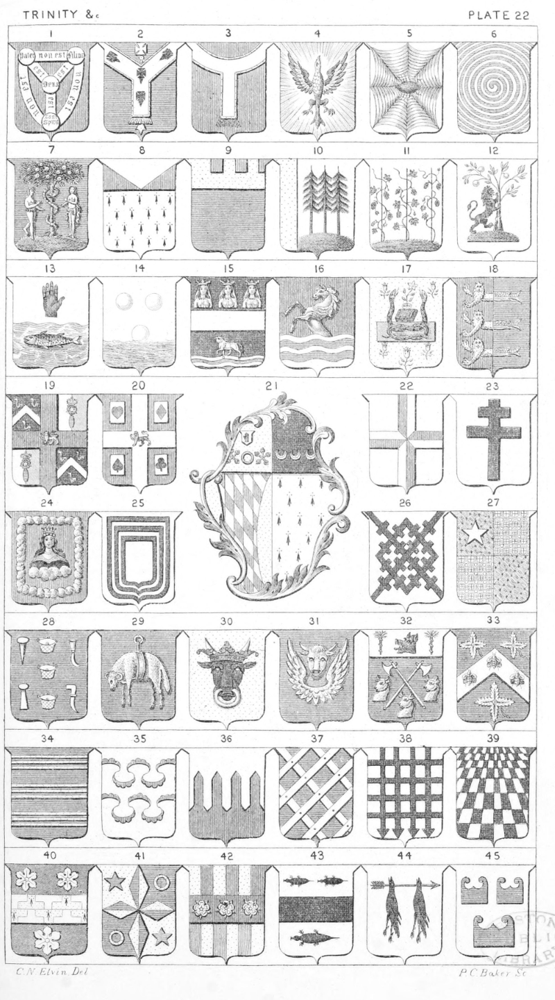

Plate 22.

Plate 22.
- Shield of the Trinity
- Az. an Episcopal Staff in pale or,
ensigned with a cross pattee ar.
surmounted of a Pall of the last,
charged with four crosses formée-fitchee sa., edged and fringed
of the second. Archbishop of
Canterbury
- Gu. a Pall ar. edged and fringed or.
- Holy Dove
- Spider and Web, also termed " Cobweb"
- Gurges, or Whirlpool
- Az. on a mount in base vert, the
tree of Paradise environed with the
Serpent betw. Adam and Eve all
ppr. Fruiterer's Company, London
- Erm. A Chief ar. Chausse gu.
- Az. A Chief or, ajoure gu.
- Ar. on a mount in base vert three
pine trees ppr. a dexter side or.
Grote
- Ar. the base vert issuing therefrom
three hop poles sustaining their
fruit all ppr. Houblon
- Ar. on a mount vert, a lion ramp.
contourne gu. supporting an orange
tree-fructed ppr. De la Motte
- Per-fesse wavy the chief ar., the base
representing waves of the sea, in
chief a dexter hand couped at the
wrist gu., in base a Salmon naiant
ppr. O'Neill
- Ar. two bubbles, and a third rising
out of water in base ppr. borne by
Aire and Bubbleward
- Sa. a Fesse ar., in chief three ladies
from the waist heads affrontee
arrayed and veiled ar. crowned
or, in base an ox of the second
passing over a ford ppr. See of
Oxford
- Gu., a demi horse ar., hoofed and
maned or, issuing out of water in
base ppr. Trevelyan. See Water
- Or, Semee of Flowers gentle, in the
middle of the chief a sengreen
resting upon a book betw. two
serpents in pale, their tails knit
together all in ppr. colours, resting
upon a square stone vert. Caius
College Cambridge
- Per-Pale gu. and az. three lions
pass, guard in pale or, Dimidiated
with three, herrings naiant in pale
ar. Gt. Yarmouth. See term Dimidiation
- Quarterly, 1 and 4 sa. a chev. betw.
three fleames ar. 2nd. and 3rd Per-
Pale ar. and vert, a Spatula in
pale az. surmounted of a Rose gu.
charged with another silver, the
first rose regally crowned ppr . betw.
the four quarters of a cross of St.
George charged with a lion pass,
guard, or. Barber's Company
- Gu. on a cross ar., betw. the four
ace cards ppr. viz.: the ace of
hearts and diamonds in chief, the
ace of spades and clubs in base ;
a lion pass, guard, of the first.
Card Maker's Company
- Arms of a Widow. See Dictionary
- A Cross Quarterly quartered
- A Cross Patriarchal
- Gu. a demi virgin couped below the
shoulders, issuing from clouds all
ppr. vested or, crowned with an
eastern crown of the last, her hair
dishevelled, and wreathed round
the temples with roses of the
second, all within an orle of clouds
ppr. Mercer's Company of London
- Ar. an Orle of three pieces sa.
- Ar. a Frett bretessed, espined, or
crossed sa.
- Diaper, or Diapre. Quarterly diaper,
in the first quarter a mullet or.
De Vere
- Az. three cross baskets in pale ar.
betw. a prime in chief and an iron
in base on the dexter, and a cutting
knife in chief and an outsticker in
base on the sinister of the second.
Basket Maker's Company
- Az. a Golden Fleece
- Or, a Buffalo's head cabossed sa.
attired ar. through the nostrils an
annulet of the last, ducally crowned
gu., the attires passing through the
crown. Mecklenburg
- Ar. a Bull's head cabossed ar. armed
or. betw. two wings of the last.
Hoste
- Az. Two slaughter axes endorsed in
saltire ar. handled or, betw. three
Bull's heads couped of the second,
armed of the third, viz.: two in
fesse, and one in base, on a chief
ar. a boar's head couped gu. betw.
two block-brushes vert. Butcher's
Company
- Az. on a chev. ar. betw. three Staff-Tree leaves slipped or, as many
Bees volant ppr. Leaf
- Az. Three Tierce's or. borne by
Bourburg and Bernbing. This
bearing is Blazoned in Blomfield's
His. of Nor., vol. II., p. 469, as
sa. three Trimelles or, for the
family of Warner
- Ar. three Viures nebulee, counter-
nebulee invected gu.
- Plaisse, or Plaissa
- Lattice, Trellise, or Treille
- Portcullised
- Barry paly in prospect ar. and sa.
Prospect
- Vert, a fess Cuppa ar. and erminois,
betw. three narcissus flowers of
the second. White
- Quarterly, or and az. four lozenges
conjoined in cross throughout betw.
a mullet in the 1st and 4th quarters
and an annulet in the 2nd and 3rd
quarters all counterchanged. Pea-
cock
- Per-fesse paly of six or and gu.
counterchanged on a fesse of the
last three roses ar. Martineau
- Ar. a fesse betw. three moles sa.
Mitford
- Ar. Two Crows sa. pendent on an
arrow fesseways ppr. Murdock
- Ar. Three Furisons az. Steel